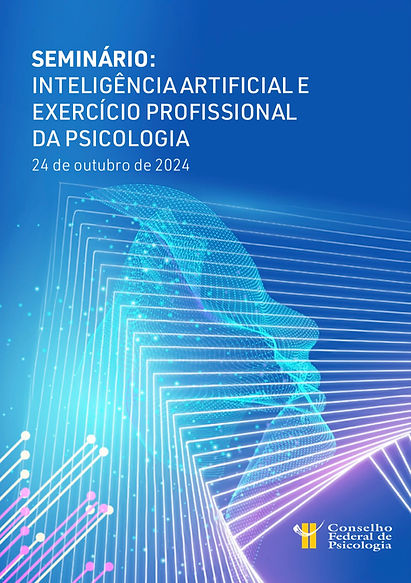
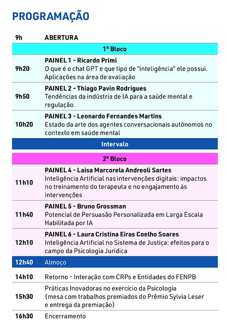

No dia 24 de outubro de 2024 o Conselho Federal de Psicologia promoveu o Seminário “Inteligência Artificial e Exercício Profissional da Psicologia”. O evento contou com transmissão online para os Conselhos Regionais de Psicologia e a ABRAPESP, por ser integrante do FENPB (Fórum de Entidades Nacionais da Psicologia Brasileira), foi convidada a ter 5 representantes participando de forma remota.
Segundo convite do CFP, o evento foi criado para ser um espaço fundamental para discutir as implicações da Inteligência Artificial na prática psicológica, suas potencialidades e desafios éticos.
O evento contou com a apresentação de seis painéis pela manhã para introduzir as discussões que aconteceram no período da tarde. Segue abaixo a programação completa:

Os 5 representantes da ABRAPESP foram associados que compõem Comitês, Coordenação de Grupos de Trabalho e/ou que pertencem ao grupo de Supervisores e que tinham interesse e disponibilidade em participar, com o intuito de trazer essas discussões para dentro do nosso contexto de trabalho.
E vale lembrar que a ABRAPESP já vem atenta ao tema. No IX Congresso, em novembro de 2023, em Petrópolis, houve o Encontro Temático “Psicologia do Esporte e Inteligência Artificial” no qual o tema foi discutido, levantando pontos de aplicação e de cuidados.
Saiba um pouco mais como foi o Seminário através do depoimento do associados que participaram do evento:
Por que você se interessou em participar do evento?
Emmi Myotin: Eu me interessei em participar do Seminário sobre IA na Psicologia para saber um pouco mais sobre o que essa tecnologia tem a nos oferecer e as implicações de seu uso nas intervenções psicológicas. Como todas as tecnologias, tem seus prós e contras, nesse sentido meu interesse pelo evento era buscar ali informações sobre como formar parcerias estratégicas com a tecnologia a nosso favor, estando atenta em preservar sempre as questões éticas e humanas, principalmente relacionadas à privacidade e segurança dos dados das pessoas.
Qual aspecto tratado te chamou mais atenção?
Fabiana Silva Nascimento: Psicólogos que atuam em áreas de pesquisa, análise de comportamento e psicometria podem se beneficiar dessa otimização, já que a IA facilita a análise de dados complexos de forma mais ágil. Entretanto, apesar de ser útil na coleta e processamento de dados, a interpretação subjetiva dos resultados e a compreensão do contexto individual ainda dependem do psicólogo humano. Por outro lado o mal uso da IA pode trazer danos e deve ser usada com responsabilidade.
Você já utiliza IA na sua prática de Psicóloga do esporte? Qual a aplicabilidade do tema no seu cotidiano?
Marta Aparecida Magalhães: Eu ainda não tenho muita familiaridade com Inteligência Artificial (IA), pelo pouco que vi e ouvi, penso que ela pode trazer benefícios significativos para o trabalho do Psicólogo Esportivo.
Eu não acredito que ela substitua o contato, a presença, a escuta presentificada, a relação humana, mas acredito que se souber usá-la como ferramenta estratégica, poderá otimizar processos, e trazer insights valiosos para o desempenho esportivo. Ela potencializa o que o psicólogo já faz de melhor: ajudar o atleta a alcançar equilíbrio e excelência.
Na sua opinião, quais cuidados precisamos ter com o uso da IA na Psicologia do Esporte?
Avelino Ribeiro de Castro: Na minha opinião, o primeiro cuidado sempre vai ser em manter seguro todo e qualquer aspecto e informação pertencentes ao cliente, seja um atleta, seja uma equipe. Na dúvida, não utilizar ferramentas com IA pode ser uma decisão. Porém, vem o segundo ponto de cuidado: informar-se. Conhecer. Avaliar. Entender uma ferramenta, principalmente uma tão nova e até mesmo inevitável, é essencial para manutenção de uma prática psicológica no esporte pautada na ética e compromissada com os direitos de quem precisa dessa ciência. Por um lado, as IAs vão chegar e fazer boa parte do que fazemos atualmente. Mas por outro, elas não conseguem (ainda) compreender o humano como um humano pode compreender.
Na sua opinião, quais às perspectivas da IA na Psicologia do Esporte?
Marina Penteado Gusson: Assim como temos observado em outras áreas de conhecimento e campos de trabalho, a Inteligência Artificial chegou para transformar e para ficar. Na Psicologia do Esporte, vejo que a IA será facilmente utilizada na disseminação e ensino das técnicas de treinamento mental e estratégias de intervenção mais tecnicistas o que trará o imperativo de que os profissionais da área sejam sujeitos críticos e analíticos das situações, demandando boa habilidade de análise institucional, gestão de pessoas, solução de problemas e bom olhar clínico.
Por isso, vejo que os interessados na Psicologia do Esporte já precisam planejar sua formação a partir desse novo paradigma. E os profissionais que já atuam na área precisarão conhecer mais sobre a IA para usufruirem do potencial de seu potencial de contribuição, mas sempre com o cuidado da reafirmação dos preceitos éticos e as responsabilidades de nossa profissão.
Quer saber mais?
Baixe aqui o e-book Inteligência Artificial e Psicologia, organizado por Laura Cristina Eiras Coelho Soares, que apresentou um Painel durante o Seminário.